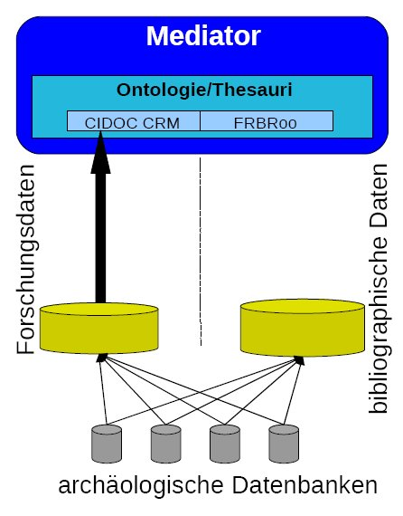

Bericht zum Arbeitspaket Dokumentenrepositorium
Die Erweiterung der Ontologie um bibliographische Daten
In den Berichten der Informatiker und der Gruppe rund um die Ontologie wurde bisher ein Ontologiemodell vorgestellt, welches kompatibel zum CIDOC CRM in der Version des English Heritage ist. Dies bezieht sich auf den Teil der Daten aus den archäologischen Datenbanken, der sich als Forschungsdaten bzw. Primärdaten einordnen läßt. Diese werden aus den Datenbanken ausgelesen, aufbereitet und in einem gemeinsamen Repositorium bzw. Archiv gesammelt.
Diese Daten sind aber nur ein Teil des archäologischen Materials. In den Datenbanken der archäologischen Projekte kommen auch bibliographische Daten wie Literaturverweise, Zitate, Abstracts, Volltexte usw., die auch über die ArcheoInf-Ontologie erschlossen werden sollen und mit den Primärdaten verknüpft werden bzw. bleiben sollen. Dabei gibt es allerdings ein Problem: Die bibliographischen Daten lassen sich in CIDOC CRM und somit in unser Ontologie-Modell nicht einbinden! D.h. das Modell ist noch immer zu klein.
In der Arbeitsgruppe zum Dokumentenrepositorium wird daher folgende Lösung verfolgt: Das Ontologiemodell von ArcheoInf wird um einen FRBRoo-kombatiblen Teil erweitert (siehe Abbildung 1).

Abbildung 1: Schematische Darstellung des Lösungsansatzes, Teil 1
FRBRoo basiert auf den so genannten Functional Requirements for Bibliographic Records, kurz FRBR. Es wurde und wird in einer Arbeitsgruppe der IFLA, dem internationalen Dachverband der Bibliotheken, entwickelt. FRBRoo verbindet CIDOC CRM mit den FRBR.
Ein näheres Eingehen auf FRBR würde hier den Rahmen völlig sprengen! Nur soviel: FRBR ist ein Datenmodell, welches den Anspruch erhebt, die bibliographischen Daten nutzerorientierter und somit Prozeß-basierter zu strukturieren als dies bisher der Fall ist. FRBR ist weder ein Datenformat noch ein Katalogisierungsregelwerk.
Wie sich CIDOC CRM zu FRBRoo verhält kann man schematisch an der Darstellung in Abbildung 2 sehen. Die blauen Kästchen gehören zu FRBR und die gelben zu CIDOC. Wie man unschwer erkennen kann sind die Modelle und deren Verknüpfungen nicht trivial.

Abbildung 2: FRBRoo: Work and Expression – dynamic view, Quelle: Graphical representation of the FRBRoo version 1.0
Die Daten aus den archäologischen Datenbanken müssen nun irgendwie an die FRBR-Ontologie angebunden werden. Dies geschieht im Groben in drei Schritten:
- Die Daten werden in das Literaturverwaltungsprogramm Citavi importiert und dort per Hand nach bearbeitet.
Gründe, die für Citavi (Link: http://citavi.de/) sprechen sind sehr guter Support, Import/Export von CSV-Daten und die Deutschsprachigkeit.
- Die Daten werden im MODS-Format aus Citavi exportiert und ein Dokumentenrepositorium abgespeichert.
MODS ist ein Metadatenformat für bibliographische Daten, welches von der Library of Congress (USA) entwickelt wurde. Es ist eine abgespeckte Version von MARCXML, was seinerseits eine XML-Darstellung von MARC21 ist, dem bibliographischen Austauschformat im anglo-amerikanischen Raum. (Standards at the Library of Congress)
Die Exportfunktion für Citavi bekommen wir aufgrund des oben genannten guten Supports eigens zur Verfügung gestellt.
Das Repositorium ist eine Eigenentwicklung der UB Bochum auf Basis von Atom-Technologien (z.B. bekannt von RSS-Feeds) und ist nicht mit dem oben genannten Repositorium für Primärdaten zu verwechseln. - Die MODS-Daten aus dem Dokumentenrepositorium werden dann FRBR-kompatibel über eine Exportschnittstelle angeboten (vergleichbar mit der OAI-PMH-Schnittstelle).
Somit lässt sich das obige Schema nun wie folgt vervollständigen.
Abbildung 3: Schematische Darstellung des Lösungsansatzes, Teil 2
Weiter oben wurde bereits die Verknüpfung der Primärdaten mit den bibliographischen Daten angesprochen, was hier nochmals aufgegriffen wird.
In den archäologischen Datenbanken sind auch Verknüpfungen zwischen Forschungsdaten und bibliographischen Daten enthalten, d.h. es werden z.B. zu einer Publikation die entsprechenden Fotos zu Grabungsobjekten verknüpft.
Ziel ist es natürlich, diese Verbindung zu erhalten und ggf. “zu festigen”.
Die Verbindung der Forschungsdaten mit den bibliographischen Daten wird auf zwei Ebenen realisiert werden:
- durch Persistent Identifier auf Datenebene und
- durch Beziehungen/Relations in CIDOC bzw. FRBR.
Wie dies genau aussehen wird, ist u.a. Gegenstand unserer Bemühungen in den nächsten Wochen und Monaten. Dazu muss das Modell FRBRoo analysiert und auf unsere Bedürfnisse angepasst, d.h. vor allem reduziert werden, da nicht alle Objekte und Relationen für unsere Daten relevant sein werden.
Ferner ist natürlich das Dokumentenrepositorium aufzubauen und die Exportschnittstelle des Dokumentenrepositoriums von MODS zu FRBRoo zu realisieren.
Die Entwicklung des Dokumentenrepositoriums
Im Rahmen des ArcheoInf-Projekts wird ein Dokumentenrepositorium eingerichtet, das zwei verschiedenen Zwecken dienen soll: der Recherche in den bibliographischen Daten, die von den Partnerprojekten zusammengestellt worden sind, und der Open Access-Publikation wissenschaftlicher Texte.
Die Arbeitsgruppe Dokumentenrepositorium konnte dem Beirat die Benutzeroberfläche des Repositorium-Prototyps präsentieren und die Funktionalitäten erklären; erste Beispieldaten sind bereits eingespielt worden. Das technische Konzept beruht auf der Architektur der Hochschulbibliographie der Ruhr-Universität Bochum, die derzeit in einem Projekt der Universitätsbibliothek Bochum erstellt wird. Diese Architektur setzt sich aus verschiedenen Open Source-Programmen zusammen, so dass die Hochschulbibliographie und das darauf aufsetzende ArcheoInf-Repository nicht von kommerziellen Produkten abhängig sein werden und größter Spielraum für die eigene Gestaltung des Systems besteht.
ArcheoInf Dokumentenrepositorium: Oberfläche des Prototyps
Abbildung 4: Web-Oberfläche des prototypischen Dokumentenrepositoriums
Die Oberfläche des Repositoriums bietet im linken Frame die Möglichkeit, Publikationen zu melden und open access zu veröffentlichen (Kasten oben links). Darunter befinden sich Bereiche, in denen Informationen über „Open Access“ in der Archäologie zu finden sind (mit Links zu Online-Zeitschriften, der Virtuellen Fachbibliothek für Altertumswissenschaften Propylaeum, dem Informationsportal open-access.net und weiterführenden Informationen für Autoren), Links zu den ArcheoInf-Partnerprojekten sowie der Bereich „FAQ“ mit Erläuterungen zum Repositorium, zu ArcheoInf u.a.
Im mittleren Frame werden je nach Nutzung des Repositoriums entweder Publikationen angezeigt, die kürzlich gemeldet wurden, oder es wird die Trefferliste der Recherche im Datenpool der bibliographischen Daten der Projektpartner ausgegeben. Umfangreiche Suchmöglichkeiten für die Literaturrecherche werden im rechten Frame angeboten.
Die Funktionalitäten des Repositoriums im Einzelnen
- Publikationen open access veröffentlichen
Dieser Service richtet sich in erster Linie an die Projektpartner, die hier ihre Publikationen melden und open access veröffentlichen können. Eingestellt werden können nicht nur Monographien oder Zeitschriftenaufsätze, sondern auch Vorträge oder Forschungs- und Projektberichte, die für die Arbeit im Rahmen des Projekts wichtig sind und auf die Mitarbeiter Zugriff haben sollen, egal wo sie arbeiten. Dokumente, die nur innerhalb des jeweiligen Projekts zur Verfügung stehen sollen, werden nicht für die Öffentlichkeit freigegeben.
Der Weg zur Meldung von Titeldaten ist barrierefrei gestaltet: Der Wissenschaftler richtet zunächst ein Benutzerkonto mit Email und Passwort ein. Dann kann er seine Publikationen melden (Auswahl einer Publikationsart, Eingabe der Titeldaten, evt. Hochladen eines Volltextes). Über das Benutzerkonto können die gemeldeten Daten abgefragt und bearbeitet werden.
Die gemeldeten Titeldaten durchlaufen eine bibliothekarische Qualitätskontrolle, werden evt. ergänzt und dann freigeschaltet; die Publikation erscheint im mittleren Frame als neu eingestellter Titel. - Recherche in den bibliographischen Daten
Die bibliographischen Daten aus den Partnerprojekten sollen offen zugänglich sein für eine Literaturrecherche, die gegenüber der Suche in den bekannten fachrelevanten Informationsmitteln (Datenbanken wie Dyabola, die Année philologique oder Bibliothekskataloge von Spezialbibliotheken) Mehrwerte bietet: Die Partnerprojekte erfassen Literatur in Verbindung zu einzelnen Fundobjekten; Ziel ist, dass die Titeldaten in Verbindung mit den Funden abgefragt werden können. Die Partnerprojekte erschließen ihre Literaturdaten zudem z.T. tiefer, als dies in den fachrelevanten Informationsmitteln geschieht; verzeichnet ist außerdem graue Literatur aus den Ländern, in denen die Grabungen und Surveys stattfanden und die den Weg in deutsche Bibliotheken vielfach nicht gefunden hat.
In das Suchfeld rechts oben im Frontend können Suchbegriffe eingegeben werden, die automatisch mit dem Boole’schen Operatoren „und“ verknüpft sind. Die Ergebnisse der Suche werden im mittleren Frame gerankt ausgegeben. Im rechten Frame stehen verschiedene Möglichkeiten zur Einschränkung der Treffermenge zur Verfügung, vorgesehen sind bisher die Eingrenzung durch Erscheinungsjahre, Publikationsart oder Autoren. Die Einbindung des ArcheoInf-Thesaurus ist geplant, so dass gezielt nach Schlagwörtern recherchiert werden kann. Für individuelle Suchanfragen können RSS-Feeds eingerichtet werden. Auch beim Dokumentenrepositorium wird großer Wert auf die Semantic Web-Fähigkeit gelegt; die Titelangaben können in RDFa (RDF = Resource Description Framework, eine formale Sprache zur Bereitstellung von Metadaten im World Wide Web) angezeigt werden.